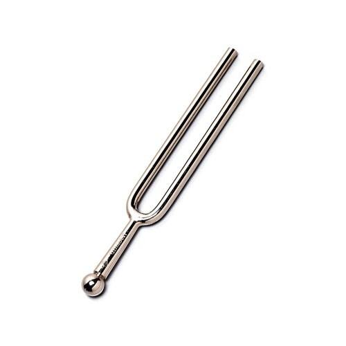
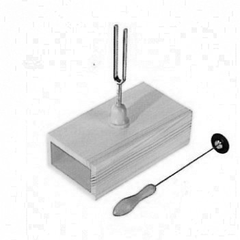
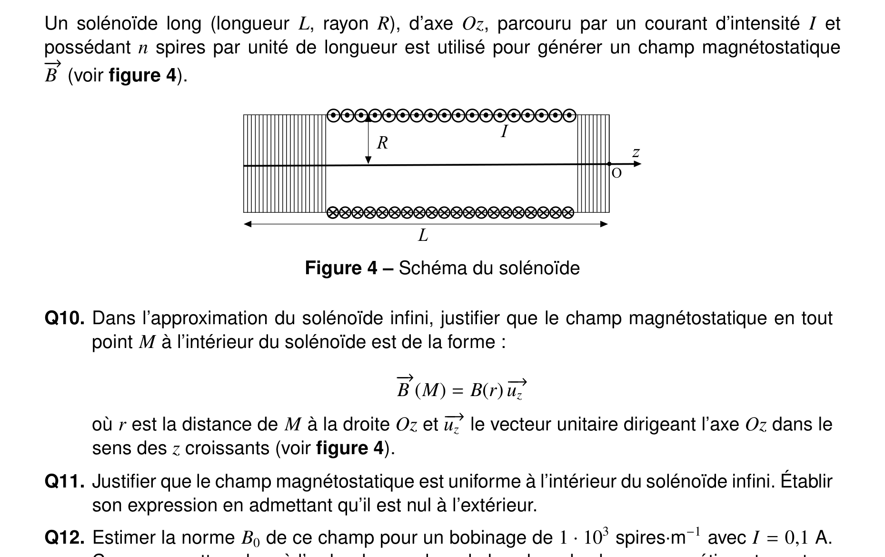
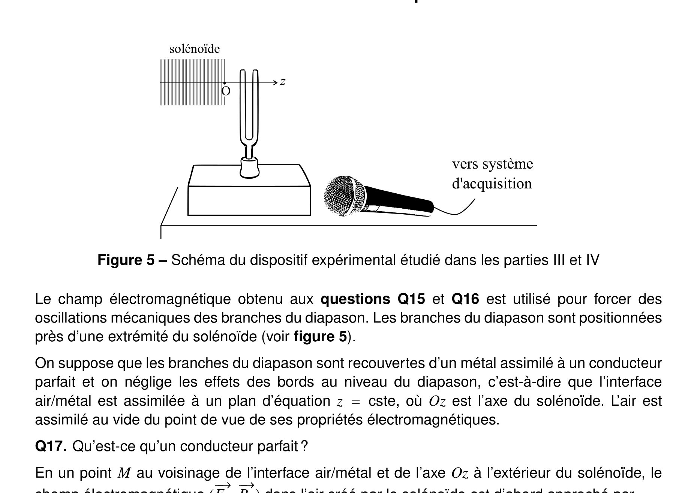

E3A-Polytech 2022 -- Physique-Chimie
Diapason et Ammoniac. Duree : 4 heures. Les calculatrices sont interdites. Le sujet comporte deux problemes independants : l'etude d'un diapason (oscillateur, solenoide, interaction EM, tube fluorescent) et la synthese de l'ammoniac (procede Haber-Bosch).
Probleme 1 -- Etude d'un diapason
Partie I -- Reponse percussionnelle


Quel phenomene physique la force \(\vec{f} = -\lambda\vec{v}\) modelise-t-elle ? Justifier par un argument energetique le signe de \(\lambda\).
On note \(z(t) = \ell(t) - \ell_0\). Etablir l'equation differentielle dont \(z(t)\) est solution pour \(t > 0\).
Exprimer la frequence propre et le facteur de qualite \(Q\) en fonction de \(k\), \(m\) et \(\lambda\).
Sachant que l'on obtient des pseudo-oscillations, etablir l'expression litterale de \(z(t)\).
Estimer la constante de raideur du ressort equivalent pour un diapason de 500 Hz et 30 g. Comparer avec un ressort de TP.
Proposer une estimation du facteur de qualite du diapason (emission detectable pendant 30 s).
Est-il correct d'affirmer que la duree entre deux maxima vaut exactement la periode propre ?


Est-il correct d'affirmer que les branches du diapason oscillent a la frequence \(f_0\) apres percussion ?
Exploiter le document 1 pour estimer la frequence propre et le facteur de qualite du diapason A.
Partie II -- Generation du champ excitateur

Dans l'approximation du solenoide infini, justifier que \(\vec{B}(M) = B(r)\,\vec{u}_z\).
Justifier que le champ est uniforme a l'interieur. Etablir son expression en admettant qu'il est nul a l'exterieur.
Estimer \(B_0\) pour \(n = 10^3\) spires/m et \(I = 0{,}1\) A. Comparer au champ terrestre.
Quel est l'interet de l'approximation du solenoide infini ? Conditions de validite ?
Rappeler et nommer les equations de Maxwell.

Justifier que \(\vec{E}(M,t) = E(r,t)\,\vec{u}_\theta\) a l'interieur du solenoide.
Montrer que \(E(r,t) = E_0(r)\sin(\omega t)\). Preciser \(E_0(r)\).
Partie III -- Interaction champ / branche du diapason
Qu'est-ce qu'un conducteur parfait ?
Justifier l'existence d'un champ reflechi dans l'air.
Exprimer \(\vec{E}_r(M,t)\) a l'aide de la relation de passage. En deduire \(\vec{B}_r(M,t)\).
Montrer que \(b(z) \simeq B_0(1 + az/R)\). Donner la valeur de \(a\).
Montrer que la force subie par un element de volume s'ecrit \(\mathrm{d}\vec{F}_m \simeq -\alpha\cos^2(\omega t)\,\mathrm{d}V\,\vec{u}_z\). Les dipoles induits sont-ils attires vers la zone de champ fort ?
A quelle frequence doit-on regler la source pour exciter le diapason a resonance (256 Hz) ?
Partie IV -- Fabrication de la source de courant
A quelle condition sur \(E\) le tube s'allume-t-il ? Exprimer l'instant d'allumage \(t_a\).
Le tube etant allume, exprimer \(u(t)\) en fonction de \(E'\), \(U_a\), \(r\), \(R\), \(\tau'\) et \(t_a\).
A quelle condition le tube s'eteint-il ? Exprimer l'instant d'extinction \(t_e\).
Exprimer la periode \(T\) des oscillations.
Tracer l'allure de \(u(t)\) pour \(t \geq 0\).
A partir du document 3, estimer la frequence propre et le facteur de qualite du diapason A en regime force.
Le fait que l'oscillateur ne soit pas sinusoidal est-il problematique pour l'etude en regime sinusoidal force ?
Probleme 2 -- Synthese de l'ammoniac
Donner un schema de Lewis de l'ammoniac.
Donner la structure electronique d'un atome de fer dans l'etat fondamental.
Donner la structure electronique de Fe\(^{2+}\) et Fe\(^{3+}\). Lequel est le plus stable ? Justifier.
Exprimer puis estimer la masse volumique du fer dans la structure cubique centree (\(a = 3 \times 10^2\) pm).
Commenter les valeurs de \(\Delta_r H_1^\circ = -114{,}7\) kJ/mol et \(\Delta_r S_1^\circ = -245{,}9\) J/(K.mol).
Exprimer la constante d'equilibre \(K_1\) de la reaction \(3\text{H}_2 + \text{N}_2 = 2\text{NH}_3\).
Que vaut la variance de l'equilibre ?
Exprimer \(K_1\) en fonction du rendement \(r\), \(P\) et \(p^\circ\).
Effet d'une augmentation de la pression sur le rendement ? Commenter le choix de 300 bars.
Effet d'une augmentation de la temperature sur le rendement ?
Pourquoi aurait-il ete preferable de travailler a 25 °C ? Raison du choix de 450 °C ? Role du catalyseur ?